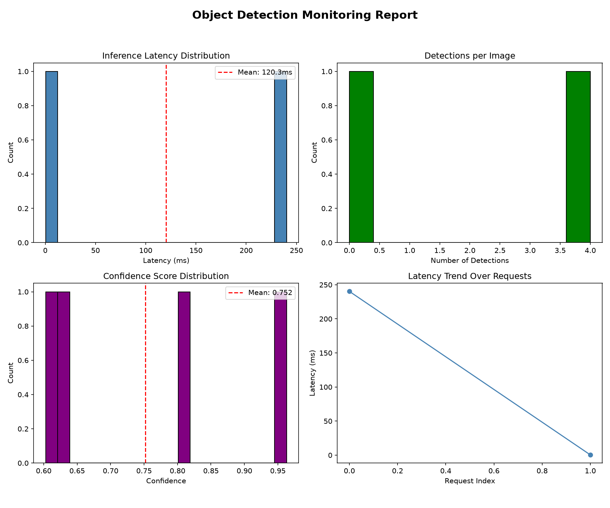

Generated: 2026-08-12T16:03:33.282216ZZ
| Metric | Threshold | Current | Status |
|---|---|---|---|
| Success Rate | > 95% | 50.0% | FAIL |
| Mean Latency | < 5000 ms | 120.3 ms | PASS |
| Failure Count | < 5 | 1 | PASS |
| Mean Confidence | > 0.30 | 0.752 | PASS |
No reference baseline set. Run baseline traffic first.
| Request ID | Status | Latency (ms) | Detections | Error |
|---|---|---|---|---|
| 2753b812 | success | 240.28 | 4 | - |
| a2ca5c42 | failure | 0.42 | 0 | Invalid content type |

This report compares current traffic against a reference baseline. Significant latency increases or confidence drops may indicate model degradation, input distribution shift, or infrastructure issues. All images are processed on CPU; GPU would reduce latency significantly.